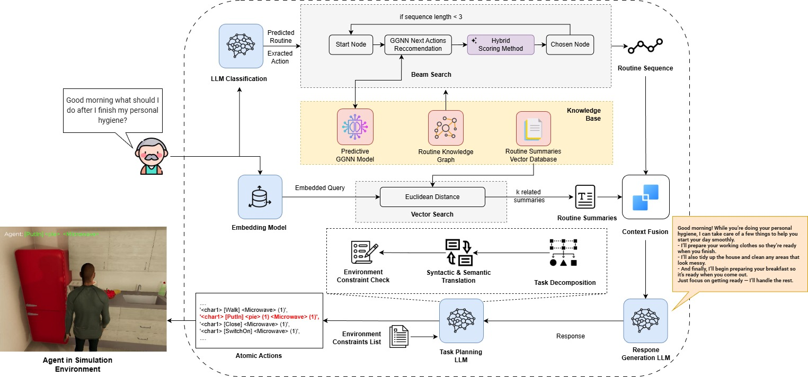
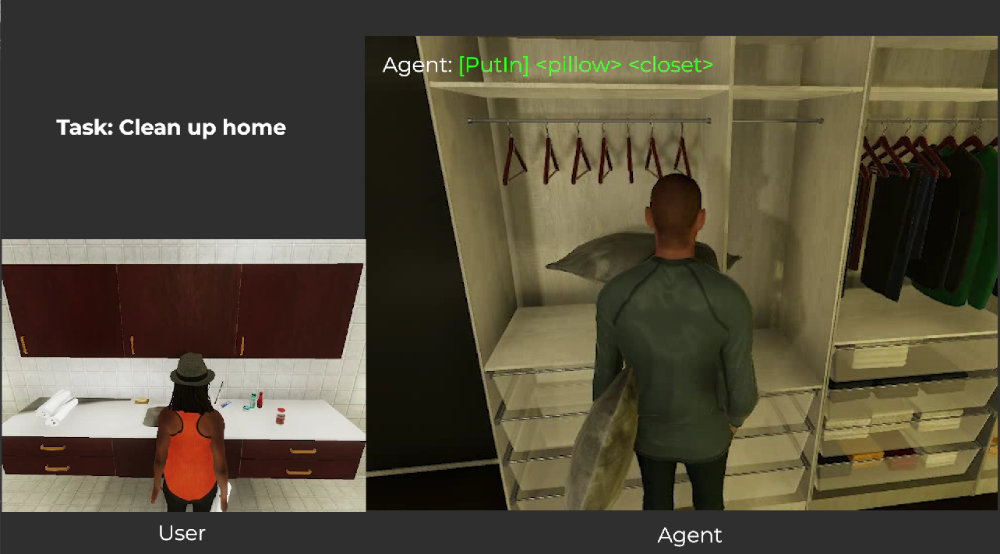
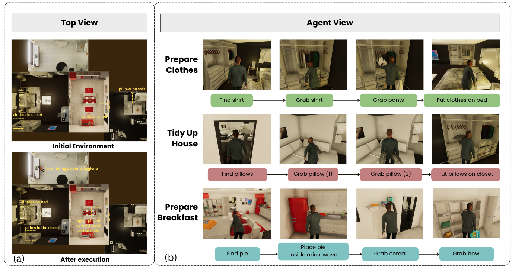

© 2026. All rights reserved.

Ambient Assisted Living (AAL) systems aim to support independent living for elderly individuals through context-aware smart home technologies that monitor daily activities and provide timely assistance. However, existing AAL systems remain fundamentally reactive, requiring explicit user commands and lacking the ability to proactively anticipate future needs based on learned behavioral patterns. To address these challenges, we introduce ROSIE, an Routine-Oriented graph and Sequence Inference Engine that enables proactive assistance by integrating knowledge graphs, GNN-based sequence prediction, and hybrid retrieval for personalized activity forecasting. Experiments on longitudinal data from multiple households in the CASAS dataset demonstrate that ROSIE achieves substantial improvements over state-of-the-art baselines on both random-frequency and high-frequency activity prediction. A VirtualHome simulation further demonstrates ROSIE’s ability to convert predicted routines into executable household tasks, highlighting its practical potential. This work advances AAL from reactive response systems toward proactive, routine-driven assistance
The global population is aging at an unprecedented rate. By 2030, one in six people worldwide will be aged 60 or over. For these individuals, the priority is clear: maintaining independence and staying in their own homes for as long as possible.
While modern Smart Homes use AI and LLMs to assist, most remain reactive—waiting for a command rather than anticipating a need. ROSIE shifts the paradigm from "Response" to "Anticipation."
A novel framework integrating Knowledge Graphs and Semantic Retrieval for personalized reasoning.
Using Graph Neural Networks to learn temporal activity patterns for multi-step sequence prediction.
Evaluated on 12 real-world households (CASAS dataset) spanning 3 months of behavioral data.
Translates predicted routines into executable tasks within a realistic VirtualHome simulation.
ROSIE transforms raw sensor data into proactive assistance through a three-stage pipeline: Knowledge Construction, Hybrid Retrieval, and Task Planning.

Figure 1: ROSIE System Architecture. The pipeline integrates Hybrid Retrieval, Context Fusion, and Task Planning.
We process longitudinal data from the CASAS dataset (12 households over 3 months) through three parallel streams:
ROSIE uses a dual-engine approach to ensure it understands both structured routines and fuzzy natural language queries.
Uses Beam Search enhanced by GNN scores to traverse the activity graph. It prioritizes routine-consistent paths using a hybrid scoring function:
Score = Graph_Weight × (1 + γ · GNN_Prob)
Uses Sentence Transformers to match user queries (e.g., "early morning") with pre-generated routine summaries via Euclidean distance.

Figure 2: VirtualHome Agent Execution
The final predicted routine is converted into action through a two-stage reasoning process:
[Grab] Milk) for the VirtualHome simulation.We evaluated ROSIE on the CASAS dataset across two specialized benchmarks: Random Frequency Prediction (RFP) for irregular behaviors and High Frequency Prediction (HFP) for habitual routines.
| Model | Hits@1 | Hits@3 | Hits@5 | Recall@1 | Recall@3 | Recall@5 |
|---|---|---|---|---|---|---|
| Random Frequency Prediction (RFP) | ||||||
| LLM-only | 0.0500 | 0.2000 | 0.2000 | 0.0500 | 0.1500 | 0.1917 |
| SubgraphRAG | 0.0500 | 0.2500 | 0.4000 | 0.0417 | 0.3167 | 0.4500 |
| ToG | 0.2000 | 0.3000 | 0.3500 | 0.2250 | 0.3333 | 0.3500 |
| SR-GNN | 0.0333 | 0.0833 | 0.2333 | 0.1500 | 0.2750 | 0.3500 |
| ROSIE (Ours) | 0.4000 | 0.3500 | 0.5500 | 0.3583 | 0.5250 | 0.5667 |
| High Frequency Prediction (HFP) | ||||||
| LLM-only | 0.0000 | 0.3500 | 0.4000 | 0.0333 | 0.3583 | 0.3583 |
| SubgraphRAG | 0.4500 | 0.5200 | 0.6000 | 0.4583 | 0.5500 | 0.6000 |
| ToG | 0.1500 | 0.2500 | 0.2500 | 0.2583 | 0.3000 | 0.3500 |
| SR-GNN | 0.1500 | 0.4250 | 0.4750 | 0.1417 | 0.3667 | 0.3833 |
| ROSIE (Ours) | 0.3500 | 0.4500 | 0.5500 | 0.5167 | 0.5833 | 0.6083 |
| Model Variant | H@1 | H@3 | H@5 | R@1 | R@3 | R@5 |
|---|---|---|---|---|---|---|
| Full ROSIE Model | 0.3500 | 0.5000 | 0.5500 | 0.3583 | 0.5250 | 0.5667 |
| w/o Routine Context | 0.1500 | 0.2000 | 0.3500 | 0.1667 | 0.2417 | 0.3583 |
| w/o Graph Structure | 0.2000 | 0.3500 | 0.4000 | 0.1750 | 0.2833 | 0.2833 |
| w/o GNN Enhancement | 0.2000 | 0.4000 | 0.4500 | 0.2000 | 0.4417 | 0.4917 |
| w/o Beam Search | 0.3000 | 0.4500 | 0.4500 | 0.1750 | 0.3167 | 0.4167 |
We demonstrated ROSIE’s practical utility by integrating it with the VirtualHome platform. The system successfully translates high-level predicted routines into atomic, executable household tasks.

Figure 3: Sequential execution of "Prepare Clothes," "Tidy Up," and "Prepare Breakfast" while the user is occupied.
© 2026. All rights reserved.